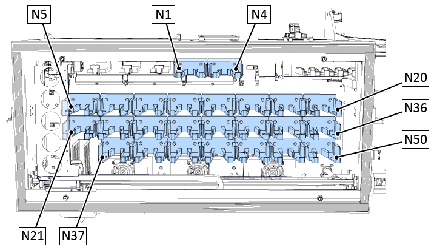
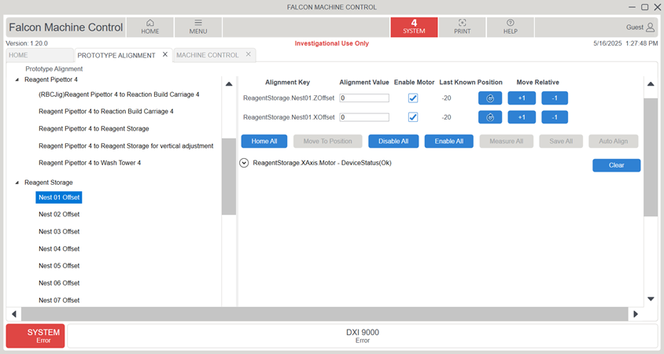
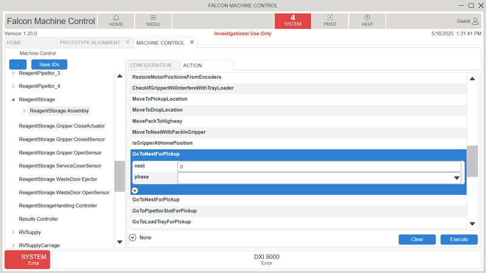
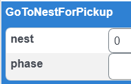
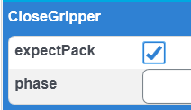
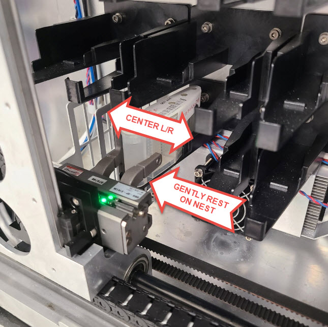
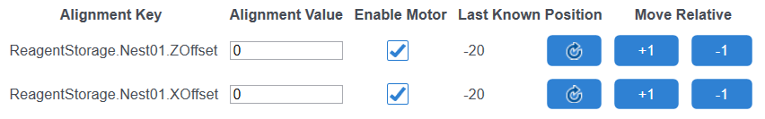

This topic includes information about how to align individual reagent nests.
Prerequisites
Before you begin an alignment procedure:
If you must make changes to the instrument's hardware, you must complete those changes before you prepare the instrument for adjustments and alignments.
You must verify that alignments have previously been completed on the instrument. To verify, in the Machine Control App go to
Menu > Prototype Alignment to open the Prototype Alignment page and to verify the
Finalize Instrument Alignments button is
GRAY in color. If the button is
BLUE in color, do not complete this procedure. Instead, you must first complete manual alignments.
You must first initialize the instrument to a
GREEN (Ready) status to ensure all subsystems have been successfully initialized and homed. You must then enter the instrument into a
BLUE (Maintenance) status.
Note: If the instrument enters into a
RED (Stopped) status:
Verify the interlock switch is in the correct position.
Be sure you are signed in to use the BeckmanAdmin account.
In the Console App go to
Menu > Tools > Diagnostics > Intrusive Diagnostics and select
Start Session.
Complete all troubleshooting, adjustments, manual alignments, and maintenance necessary to be able to initialize the instrument to a
GREEN (Ready) status.
Select the
SYSTEM RUNNING button and go to
Stop > Pause to enter the instrument into a
YELLOW (Paused) status.
When to Perform
After all standard reagent storage module (RSM) alignments have been completed, if a specific nest or nests are found to be slightly out of position, perform this procedure. For more information about the standard RSM alignments, see
Aligning the Reagent Loader Tray and
Aligning the Reagent Gripper for more information.
This procedure will adjust the offsets of the reagent gripper at the individual nest positions not covered in the standard alignments.
Important: Prior to using this procedure to adjust an offset, you must confirm there is no visible damage to the nest.
Reagent Storage Nest Locations
The reagent storage nests are numbered 1-50 from left to right, and the top down, as shown below. Note that this excludes the pipetting nests (P1-P4) and the loader tray nests (T1-T4). The nest offset cannot be changed for nests 37 and 50 as these are covered in the standard reagent storage alignments.
Figure 290: Reagent Storage Nest Positions

Aligning Individual Reagent Nests
Perform this procedure to align individual reagent nests.
Caution: Do not select
Move To Position at any point in this procedure, because the reagent gripper may crash into reagent packs and/or nests and may cause damage to the reagents or hardware components.
In the Console App go to
MENU > Tools > Diagnostics > Intrusive Diagnostics and select
Start Session.
In the Machine Control App go to
MENU > Prototype Alignment to open the Prototype Alignment page.
Go to
Reagent Storage > Nest ## Offset, where "##" is the specific reagent nest to align.
Figure 291:

Select
Disable All.
Manually move the reagent gripper to the home position (to the bottom left corner of reagent storage) if it is not already located there.
Select
Home All. Confirm the gripper now rests at the home position and that there are no error messages.
Place a reagent pack in the nest being aligned.
Go to
MENU > Machine Control > ReagentStorage > ReagentStorage.Assembly.
Figure 292:

On the
Action tab select
GoToNestForPickup.

Type the nest number in the
nest box.
Select
Execute.
Select
CloseGripper.

Select
expectPack.
Select
Execute.
Note: If the gripper fails to grip the pack and an error occurs, the system may not have sufficient pneumatic pressure. Manually cycle the compressor in Machine Control to build pressure, and then repeat the action.
Check the alignment of the pack in the reagent nest.

The pack should rest gently on the surface of the nest.
Be sure the nest is not being deflected downward.
The pack should be centered in the left and right directions.
Clear and select
expectPack to toggle the gripper open and closed.
To open the gripper, select
OpenGripper and select
Execute.
To close the gripper, select
CloseGripper, select
expectPack, and select
Execute.
Confirm there is little to no movement of the reagent pack. If movement is observed, proceed to the next step to adjust the offset.
To adjust the nest offset:
On the Prototype Alignment page select
Refresh to display the value for the
Last Known Position for both
ZOffset and
XOffset. Record these values.
Figure 293:

Select
+1 and
-1 to move the gripper position within the nest to optimize the alignment. Repeat toggling the gripper to check again, and repeat until you deem the alignment acceptable.
Select
Refresh to display the value for the
Last Known Position for both
ZOffset and
XOffset. Subtract the current
Last Known Position value from the initial
Last Known Position value (recorded previously) and enter the difference into the
Alignment Value box.
Select
Save All.
Note: The
Alignment Value for reagent storage offsets should be no more than +/- 10 increments.
For example, if the optimized alignment ReagentStorage.Nest01.ZOffset is 900, and the initial ReagentStorage.Nest01.ZOffset was 901, then 900 - 901 = -1. Type
-1 into the
Alignment Value box.
For example, if the optimized alignment ReagentStorage.Nest01.XOffset is 1943, and the initial ReagentStorage.Nest01.XOffset was 1939, then 1943 - 1939 = 4. Type
4 into the
Alignment Value box.
Remove the reagent pack used for alignments.
Manually home the reagent gripper
If additional nest offsets need alignment, repeat the steps above. If no further alignments are needed, replace the covers and initialize the system with a remap.
Ending and Adjustments and Alignments Session
In the Console App go to
Menu > Tools > Diagnostics > Intrusive Diagnostics.
 to display the value for the
Last Known Position for both
ZOffset and
XOffset. Record these values.
to display the value for the
Last Known Position for both
ZOffset and
XOffset. Record these values.